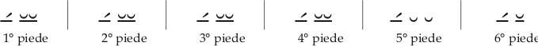

L’esàmetro dattilico
L’esàmetro è il verso più frequentemente impiegato nella poesia epica, didascalica, bucolica, satirica e, in associazione con il pentametro, nella poesia elegiaca e nell’epigramma.
Come suggerisce l’etimologia, è un verso costituito da “sei metri”, che in questo caso coincidono con i “piedi”.
Nell’esametro, come già detto, si incontrano tre tipi di piede: il dattilo ( ̲́ ̮ ̮ ), lo spondeo ( ̲́ ̲) e il trocheo ( ̲́ ̮ ). Tutti e tre i piedi hanno l’arsi, cioè l’accento (ictus), sulla prima sillaba.
Si osservi che dal punto di vista della quantità complessiva il dattilo e lo spondeo hanno lo stesso valore (4 morae: 2 + 1 + 1 il dattilo, 2 + 2 lo spondeo), mentre il trocheo vale 3 morae (2 + 1).
L’esametro dattilico presenta le seguenti caratteristiche:
i primi quattro piedi possono essere, indifferentemente, dattili o spondei;
il quinto piede è di norma un dattilo; raramente può essere uno spondeo: in questo caso l’esametro prende il nome di “spondaico”, e il quarto piede è di norma un dattilo;
il sesto piede è sempre di due sillabe e può essere spondeo o trocheo, in quanto l’ultima sillaba del verso può essere indifferentemente lunga o breve.
Schematicamente l’esametro dattilico si presenta come segue:
Le cesure principali dell’esametro (indicate con la doppia sbarretta verticale) sono la semiquinaria, la semisettenaria e la semiternaria.
La cesura semiquinaria (o pentemìmera) è posta dopo “cinque mezzi piedi” (cioè due piedi e mezzo), quindi dopo l’arsi del terzo piede; è la cesura più frequente:
I̅́tălĭ|ā́m fä|tô || prŏfù|gûs Lā|vîniăquĕ | vênĭt (Verg., Aen., I, 2)
La cesura semisettenaria (o eftemìmera) è una cesura posta dopo “sette mezzi piedi” (cioè tre piedi e mezzo), quindi dopo l’arsi del quarto piede; di norma si accompagna con la semiternaria.
La cesura semiternaria (o tritemìmera) è posta dopo “tre mezzi piedi” (cioè un piede e mezzo), quindi dopo l’arsi del secondo piede; questa cesura non si trova mai presente da sola, ma di norma si accompagna con la semisettenaria:
Nôn gălè|a̅e̅́ , || no̅n | ênsìs è|rât: || sìnè | mîlìtìs | ûsü (Ov., Metam., I, 99)
Se in un verso è possibile individuare più di una cesura, generalmente prevale la semiquinaria, come nel verso che segue:
Tâbùè|rânt cë|rä ë ; || nü|dôs quàtìt | îllè lă|cêrtös (Ov., Metam., VIII, 227)
In questo verso si rileva la presenza di tutte e tre le cesure principali, con prevalenza della semiquinaria, messa in risalto anche dalla punteggiatura.
Nell’esametro si possono trovare anche altre cesure meno frequenti, come la cesura trocaica, una cesura femminile posta dopo la prima sillaba breve del terzo piede, che deve essere ovviamente un dattilo:
Spărgëns | ûmìdă | mêllă || sò|pôrìfè|rûmquè pà|păvèr (Verg., Aen., IV, 486)
Regole pratiche per la scansione dell’esametro
Per esercitarsi a scandire l’esametro, si consiglia di segnare innanzitutto la quantità delle sillabe e suddividere il verso in piedi; la quantità delle sillabe si può determinare con relativa facilità tenendo presenti le seguenti avvertenze di carattere pratico, senza far ricorso al vocabolario.
Gli ultimi due piedi dell’esametro sono fissi:, ̲́ ̮ ̮ | ̲́ ̲̆ , quindi si possono rilevare e scandire subito (rari gli esametri spondaici, cioè con spondeo invece del dattilo in quinta sede).
In una parola di tre o più di tre sillabe l’accento tonico indica la quantità della penultima sillaba: se la penultima sillaba è accentata significa che è lunga (es.: ro-sā́-rum; Ro-mā́-ni; lau-dā́-mus), se invece non è accentata significa che è breve (es.: pú-ĕ-ri; hó-mĭ-nes; lé-gĭ-mus).
La prima sillaba del verso e di ogni piede è lunga.
I dittonghi sono lunghi. Es.: rosae, aurum, aevum, caelum.
Una vocale davanti a due consonanti o a consonante doppia (x, z) forma sillaba lunga. Es.: cāptus, fāctus, rāptus, āxis;
le due consonanti possono essere anche finale di una parola e iniziale della successiva. Es.: lupŭs > lupūs ferox; vĭr > vīr probus; puĕr > puēr diligens;
se le due consonanti sono una muta (b, c, d, g, p, ph, t, th) o f + una liquida (l, r) si ha la positio debilis, cioè la vocale che precede può essere lunga o breve secondo le esigenze metriche. Es.: pā̆trem; pharĕtra; Sophō̆cles; alā̆crem; se però le due consonanti sono l’ultima di una parola e la prima della successiva, si ha sempre l’allungamento;
la h agli effetti della quantità non va considerata.
Una vocale posta davanti a un’altra vocale è breve, o diventa breve se fosse lunga per natura. Es.: Si-ci-lĭ-a; I-ta-lĭ-a; mo-nē-re > mo-nĕ-am; ca-vē-re > ca-vĕ-as;
è lunga però nel genitivo degli aggettivi pronominali (totīus, unīus, solīus), nel genitivo e dativo della quinta declinazione preceduta da altra vocale (diēi, diērum, diēbus) e in nomi stranieri, come Aenēas.
Una sillaba posta fra due sillabe lunghe è lunga (infatti le brevi vanno a due a due).
Una sillaba posta dopo una lunga e una breve, è breve (completa il dattilo).
La i che in italiano diventa “g” si considera consonante: iuventus («gioventù»), Iuno («Giunone»), Ianus («Giano»), iam («già»).
La u dei gruppi qu e gu seguita da vocale forma sillaba con la vocale che segue. Es.: an-ti-qui, qua-ti-o, se-qui-tur, lan-gui-dus; fanno eccezione gli aggettivi in -guus e i perfetti in -gui. Es.: am-bi-gu-us; e-xi-gu-us; co-ar-gu-i; in-di-gu-i.
Una vocale che in un composto cambia timbro, per effetto dell’apofonia, di norma è breve. Es.: căpio > concĭpio; făcio > defĭcio.
La e che in italiano diventa “ie” è breve, come pure la o che diventa “uo”. Es.: pĕdes («piedi»); tĕnet («tiene»); vĕnis («vieni»); hŏmo («uomo»); bŏnus («buono»); nŏvus («nuovo»); ŏvus («uovo»); ŏpus («uopo»).
La vocale finale di una parola si elide davanti a parola che inizia per vocale, come pure le terminazioni -am, -em, -im, -om, -um. Es.: vid(i) eum; puell(a) elegans; puer(um) alacrem; sen(em) invalidum;
se però la seconda parola è est oppure es, si elide la e di est e di es anziché la terminazione della parola precedente. Es.: vitanda est > vi-tan-da’st; orandum est > o-ran-dum’st; patefacta est > pa-te-fac-ta’st; clara es > cla-ra’s.
Esempi di scansione dell’esametro
Ecco degli esempi pratici di scansione dell’esametro.
Conticuere omnes intentique ora tenebant. (Verg. Aen., II, 1)
Separiamo il quinto e sesto piede: ṓră tĕ | nḗbānt (osserva, in tenebant, la penultima sillaba accentata, quindi lunga);
in conticuere, che si pronuncia conticuére, forma arcaica per conticuerunt:
poniamo segno di lunga sulla prima sillaba (vocale seguita da due consonanti e prima sillaba del verso);
poniamo segno di lunga sulla penultima sillaba (-e-), che si pronuncia accentata;
poniamo segno di breve sulla sillaba -cu- (vocale davanti a vocale);
consegue che anche la sillaba -ti- deve essere breve (se fosse lunga, il primo piede sarebbe uno spondeo e il secondo comincerebbe con sillaba breve);
mettiamo fra parentesi la vocale finale della parola (-e), da elidere perché posta davanti a parola che comincia per vocale;
omnes: poniamo segno di lunga sulla sillaba om- (vocale davanti a due consonanti);
intentique: poniamo segno di lunga sulla prima e sulla seconda sillaba (in-ten-), con vocali poste davanti a due consonanti; mettiamo fra parentesi la vocale finale della parola, da elidere, perché posta davanti a parola che comincia per vocale;
la sillaba -es di omnes, posta tra due lunghe, deve essere lunga; è lunga anche la sillaba -ti- di intentiqu(e), che si viene a trovare posta pure tra due lunghe;
indichiamo la cesura semiquinaria, dopo omnes.
Il verso così scandito si presenterà quindi nella forma:
Cṓntìcù êr(e) öm nês || ïn têntï qu(e) ṓrà tè | nêbänt
1° piede 2° piede 3° piede 4° piede 5° piede 6° piede
Altro esempio di esametro:
O fortunatos nimium, sua si bona norint. (Verg., Georg., II, 458)
Separiamo il quinto e sesto piede: sī bŏnă | nōrīnt (osserva bona, con la o breve perché bonus in italiano diventa «buono»);
in O fortunatos:
poniamo segno di lunga sulla o iniziale (prima sillaba del verso e del piede);
per la pronuncia di fortunatos con la penultima accentata, poniamo segno di lunga sulla sillaba -na-;
poniamo segno di lunga pure sulle sillabe for- e -tos, con vocali seguite da due consonanti;
anche la sillaba -tu-, posta fra due lunghe, deve essere lunga; perciò i primi due piedi sono spondei: |o fōr|tū́nā|;
in nimium:
poniamo segno di breve sulla sillaba -mi- (vocale davanti a vocale, e accento ritratto), e di lunga sulla sillaba -um (vocale davanti a due consonanti);
la sillaba ni-, posta tra lunga e breve (questa poi seguita da lunga), deve essere breve; il terzo piede perciò è un dattilo: |tṓs nĭmĭ|;
sua:
poniamo segno di breve sulla sillaba su- (vocale davanti a vocale);
anche la sillaba -a, che segue una breve preceduta da lunga ed è seguita da lunga, deve essere breve; perciò anche il quarto piede è un dattilo: |ū̇ m sŭă|;
indichiamo la cesura semiquinaria, dopo l’arsi del terzo piede -tos. L’esametro scandito si presenterà nella forma:
O̅́ fōr | tū́nā tṓs || nĭmĭ | ū́m, sŭă| sī́ bònà | nṓrīnt
1° piede 2° piede 3° piede 4° piede 5° piede 6° piedeUna volta rilevata la quantità delle sillabe e suddiviso il verso nei vari piedi, l’esametro va letto appoggiando l’accento sull’arsi di ogni piede e alleggerendo la pronuncia delle altre sillabe; con la lettura metrica, infatti, il verso non si considera costituito da
una successione di parole, ma di piedi, e all’accento tonico delle parole si sostituisce quello ritmico. Per accostarsi alla pronuncia dei latini, inoltre, si consiglia di seguire la pronuncia classica (v. p. 8). Vanno infine messe in risalto anche le cesure, mediante una breve pausa.
Gli esametri sopra analizzati, quindi, andranno letti nel modo seguente:
Cónticu | érom | nés || (pausa) in | ténti | quórate | nébant
Ófor | túna | tós || (pausa) nimi | úmsua | síbona | nórint